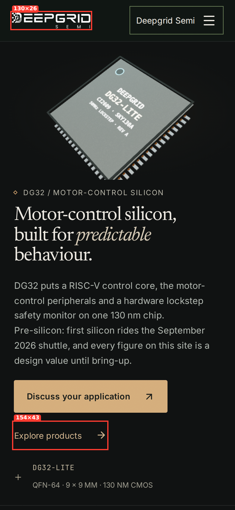
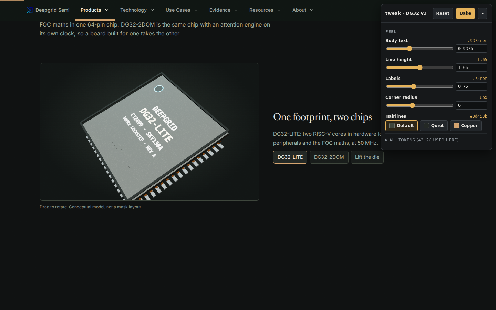
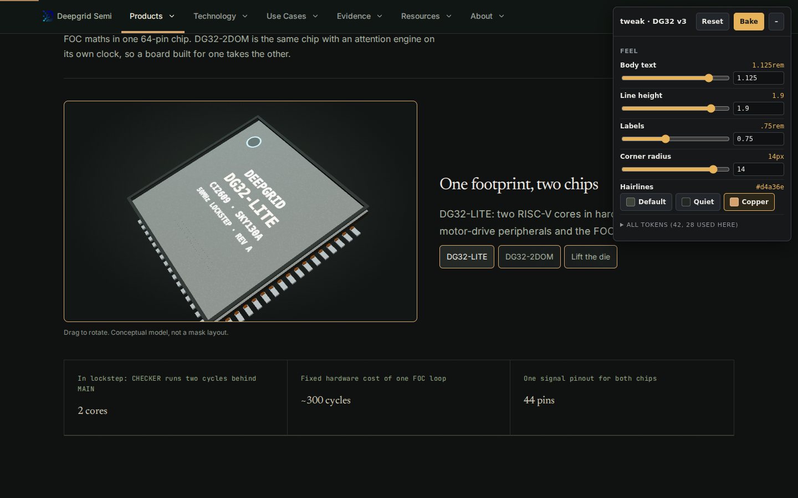
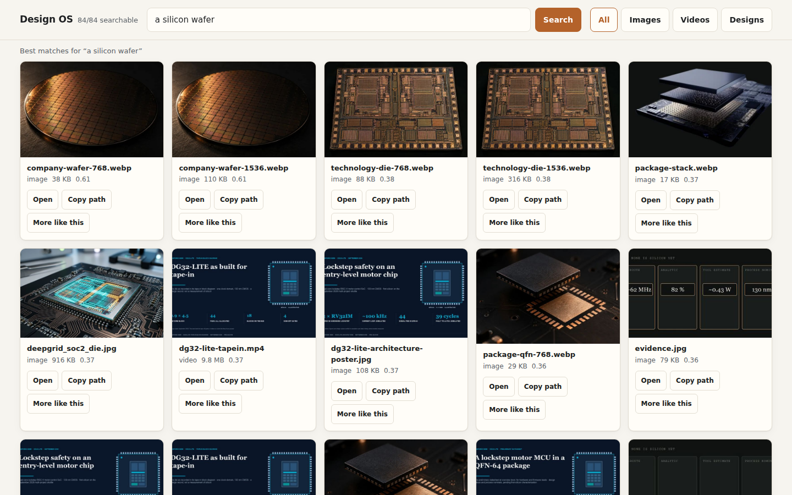

Four skills, run on DG32 v3
Every result below came from running the skill on the dr-silicon-v3 site on 28 Sep 2026. Nothing on the live site was changed.
01hig: Apple's tap-target and text rules
Checks a page at phone width against Apple's Human Interface Guidelines: every control at least 44×44 pt, body text 17 pt, contrast 4.5:1. Here it measured tap targets on five v3 pages.
sweep.mjs (phone 390 px, "minTarget": 44) routes: / · products · technology/safety · about · contact

| Page | Controls under 44 px | Examples |
|---|---|---|
| / | 26 | logo 130×26, loop buttons 32×32 |
| products | 33 | links 38×24, button 99×38 |
| technology/safety | 11 | links 38×24, 76×24 |
| about | 7 | text link 161×43 |
| contact | 19 | text link 279×43 |
02tweak: sliders over the site's tokens, then Bake
Opens the page with a panel of the design tokens you choose. Changes show live; Bake writes them into the source CSS with a backup. The panel also measures which tokens this page actually uses (28 of v3's 42).
tweak.py site/ --bake-into globals.css visual-refinement.css v3.css --config tweak.json


03design-os: search your own images by what is in them
Indexes a folder once, then finds images from a plain-words description, with no tags or filenames needed. Indexed: v3's 84 images and film posters.
design_os.py index public/images public/media → design_os.py search "a silicon wafer"

| Query | Top hit | Score |
|---|---|---|
| a silicon wafer | company-wafer | 0.61 |
| a 3D chip package on a dark background | package-stack | 0.48 |
| a motor on a factory floor | products-hero (weak) | 0.35 |
04tip-card-film: cards on a narrated video
Takes a video and a list of moments. At each one the video shrinks into a rounded corner window while a titled card builds beside it, in the brand's colours and fonts. Made from 45 s of v3's fault-path film, four cards timed to the narration.
build_tip_film.py spec.json out → hyperframes check → hyperframes render --output film.mp4